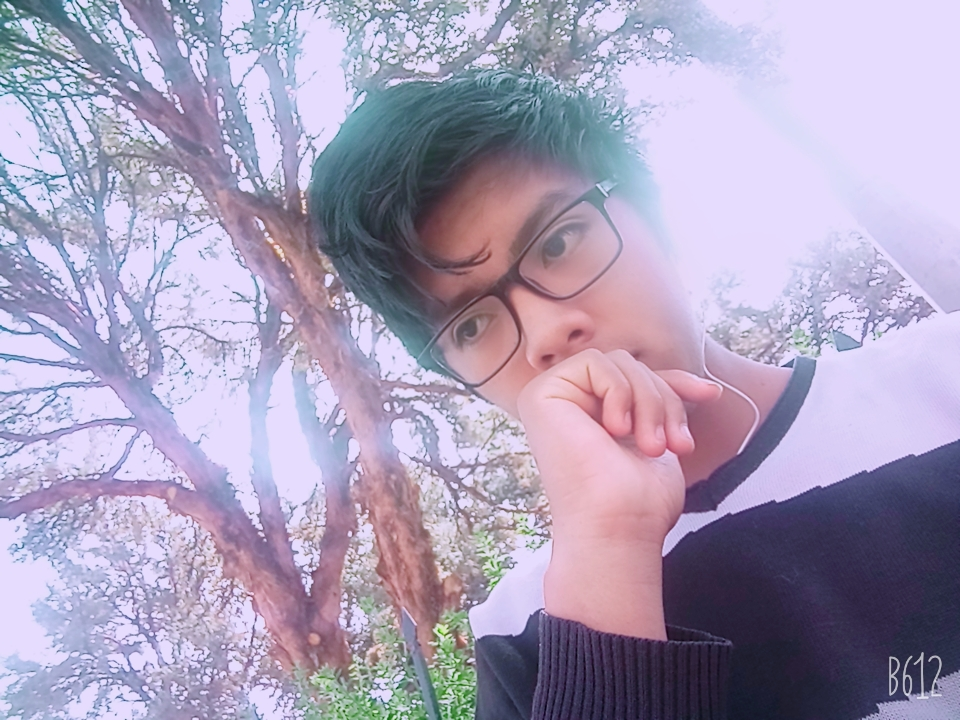

wilson Adan Huacasi Mamani
- Formacion academica
- Soy egresado del Colegio Adventista del Titicaca 2018.
- Cursos online.
- codigo facilito,ats .
- estudiante de la UPEU, curso el III ciclo de Ingieneria de Sistemas.
- experiencia laboral
- hasta el momento no tengo experiencia laboral.
- estoy aprendiendo con cursos.
- Estoy aprendiendo a programar en JAVA, html java Scritp Python.
- Me gusta
- jugar Videojuegos.
- Los animales(mas que todo los perros).
- descansar y armar cubos de rubick.
- todo tipo de Deporte.
- aptitudes
- Tengo la destreza de armar cubos de rubick.
- Capacidad de predecir.
- Conocimiento en apps y paginas web basico.
- Soy innovador.